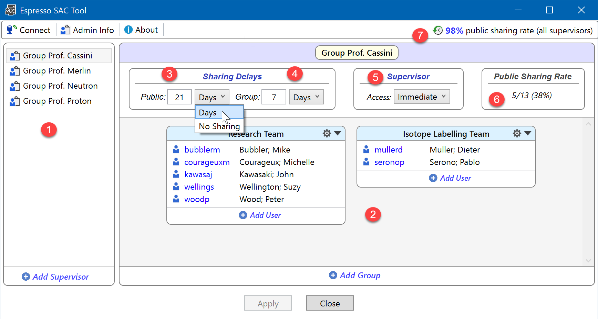
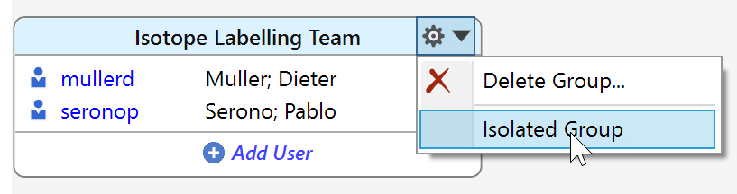
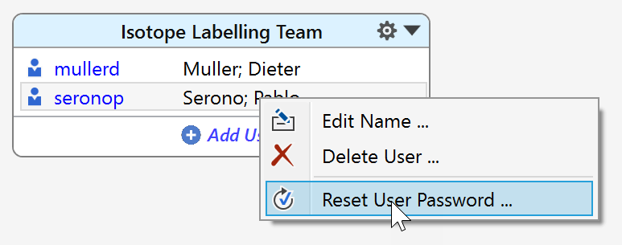

SAC Section
This topic is primarily aimed at supervisors and administrators, but also may serve users to understand how SAC works. See here for an introduction to SAC.
Important: Utilize this SAC tool only if you are planning to apply group access restrictions to your server experiments. There's absolutely no need to configure server users here for standard ELN server operations.
The Server Administrator Tool allows the specification of the Espresso ELN server experiment access by supervisors and administrators. It can be accessed in two ways:
- Administrators need to install the tool as a standalone application using the separate installer contained in the freely available Espresso ELN server package (version 2.0 and up). No installation of the Espresso ELN application is required.
- Supervisors can access the tool directly from the supervisor login of their Espresso ELN application using their supervisor credentials provided by their administrator. Other than for administrators, the tool will only display their own supervisor group, and there's no option for adding and removing supervisors.
Important: Changes to the current settings only are committed to the server after clicking the "Apply" button.

- Server access rights are organized by Supervisor (1) who can specify sharing the settings of his team as described below.
- The members of the supervisor team can be organized into one or more User Groups (2). A user group is not meant to physically map the various labs of a supervisor. It rather specifies the users who can internally share their experiments according to the current group share delay. Therefore members across different user groups of the same supervisor cannot access their experiments internally, at least until they are publicly shared. Therefore just one user group per supervisor might be a more common scenario than multiple groups. - Make sure to add all of your coworkers to your supervisor group(s), since the experiments of unlisted users are continued to be accessible immediately after finalization.
In rare cases it might be necessary to completely prevent experiments of a specific user group from access by anyone (except the supervisor), even from members of the same group and without time limit. This is an Isolated Group. Use this option in rare cases only; a valid use case for this would be contract work for a third party requiring strictest confidentiality. This property can be set from the group context menu:

When toggled on, the header area of an isolated group is marked by a yellow background to indicate the exceptional state of this group. Clicking the menu item again clears the isolated group specification.
- The Sharing Delays (3)(4) determine how many days after experiment finalization need to pass before an experiment can be shared; a value of zero means immediate sharing, while it is not recommended to exceed 360 days (although this is possible). The Public Sharing Delay (3) is the delay before all ELN users can access the experiments of the supervisor group(s) members. The Group Sharing Delay (4) is the delay before the members of the same user group (5) can access each others experiments (see comments in above bullet). The public and group sharing delays also can be set to No Sharing, meaning that no experiment of this supervisor group ever will be accessible by other users. Be careful with this option, since this severely limits the utility of the ELN; in most cases it will suffice to set a sufficiently high public sharing delay to satisfy temporary confidentiality concerns.
- A supervisor has access rights to all finalized experiments of this group. If Supervisor Access (5) is set to immediate, then he can access them immediately after finalization, independent form the group sharing delay settings. If set to group delay, then the delay set for group sharing applies.
- Sharing Rates (6)(7): The percentage of inaccessible server experiments due to SAC restrictions strongly influences the quality of searches and overall summaries. Therefore feedback about the current public sharing rate of the current supervisor group (6) and across all supervisors (7) is provided. These values only are updated after committing changes by clicking the "Apply" button.
The user context menu contains further administrative functionalities:

- Edit the full user name.
- Remove the user from the group.
- Perform a Password Reset: If a user has forgotten his personal password (i.e. the one utilized for finalizing experiments, etc), this command resets it. After re-launching the application (or during the next server auto-sync), the user is asked to enter a new personal password, which is subsequently updated in his local database. Please note that this client behavior is only supported from Espresso ELN 8.5.2 on. Earlier client versions will ignore the password reset. Alternatively, passwords also can be reset directly in the Server Users section.